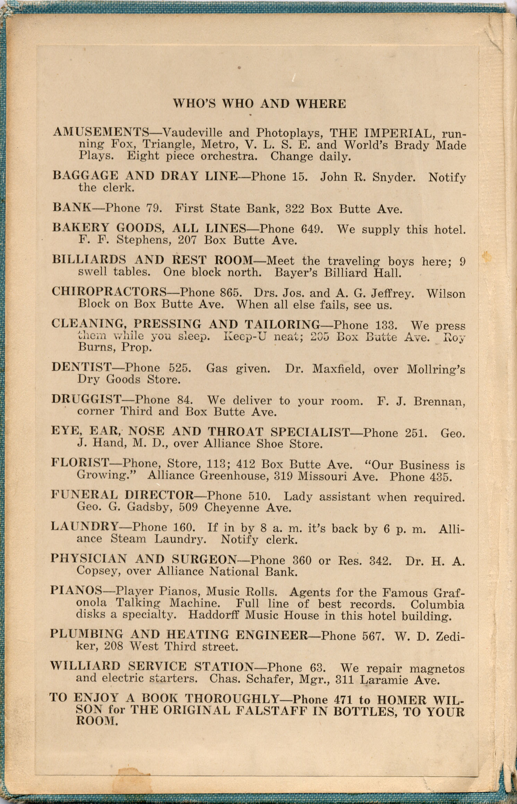

This is a test page for the post-processors' Workbench.
In a small town in Nebraska, the Alliance Hotel was a temporary home to many commercial travellers. In the lobby was a small library. To make the travellers' stay more enjoyable, a list of "Who's Who and Where" for the town was pasted inside the front cover of the books in the library.
I was taken by the simplicity of it all. The Bank's phone number was two digits: 79. The Vaudeville and Photoplays listing sounds like fun. But if the visitor wants to relax and thoroughly enjoy reading a book, the only phone number they needed was Homer Wilson's. You'll find it—and why—at the bottom of the page.
